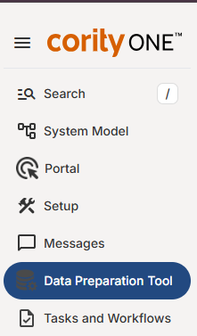
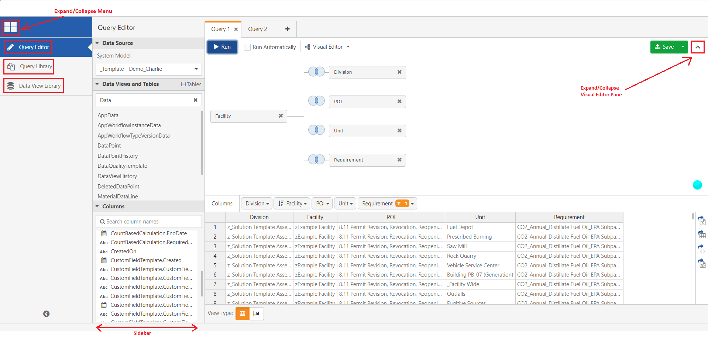
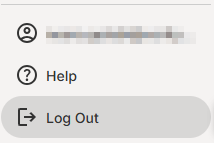

If the Data Preparation Tool is not displayed by default when you log in, you can open it from the main menu.

After opening the Tool in a separate tab, add the page to your browser bookmarks to access it directly in the future.
The Query Editor, Query Library, and Data View Library can be accessed from the menu on the left. The menu may display icons and text, or icons only in collapsed view (by default). Select the menu button (top left) to expand or collapse the menu. The angle-left/angle-right icon (bottom left) allows you to hide or show the side bar for all modes.

When you are finished working, it is recommended you sign out of the system with the Log Out button at the bottom of the main menu.
